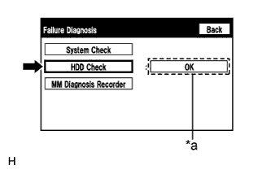

DTC B15B8 Неисправность жесткого диска |
| Код DTC | Условие обнаружения DTC | Неисправный участок |
| B15B8 | Неисправность жесткого диска. | Дисплей модуля системы навигации и индикации |
| 1.ПРОВЕРЬТЕ СОСТОЯНИЕ ЖЕСТКОГО ДИСКА |
|  |
Войдите в режим "Failure Diagnosis" (диагностика неисправностей) (Нажмите здесь).
Нажмите "HDD Check" (проверка жесткого диска).
Проверьте состояние жесткого диска.
| *a | Результат |
|
| ||||
| OK | |
| 2.ПРОВЕРЬТЕ DTC |
Сбросьте коды DTC (Нажмите здесь).
Проверьте коды DTC и проверьте, возникает ли эта же неисправность снова.
| Результат | Следующий шаг |
| Коды DTC не выводятся | А |
| Код DTC B15B8 выводится | B |
|
| ||||
| А | ||
| ||